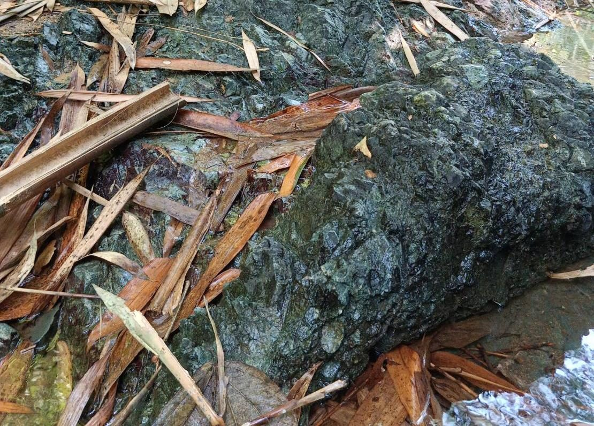
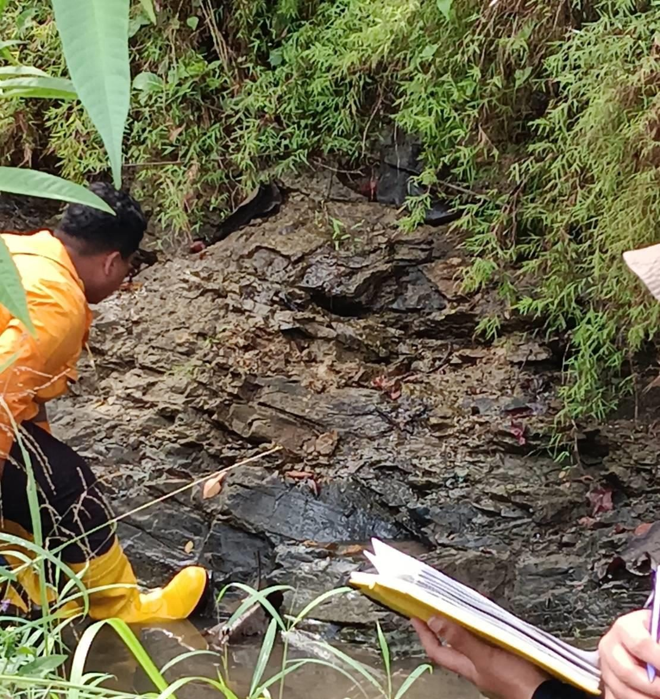
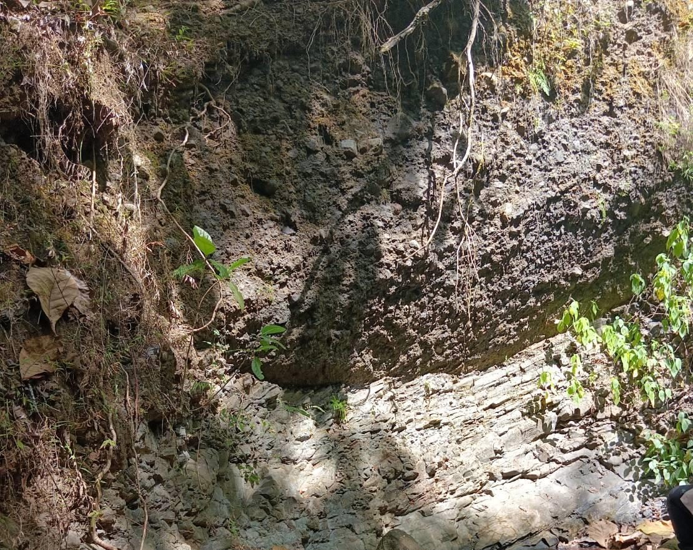
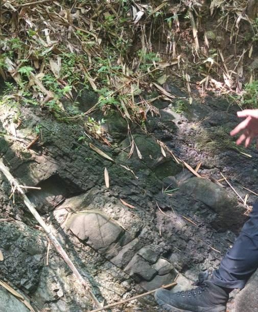
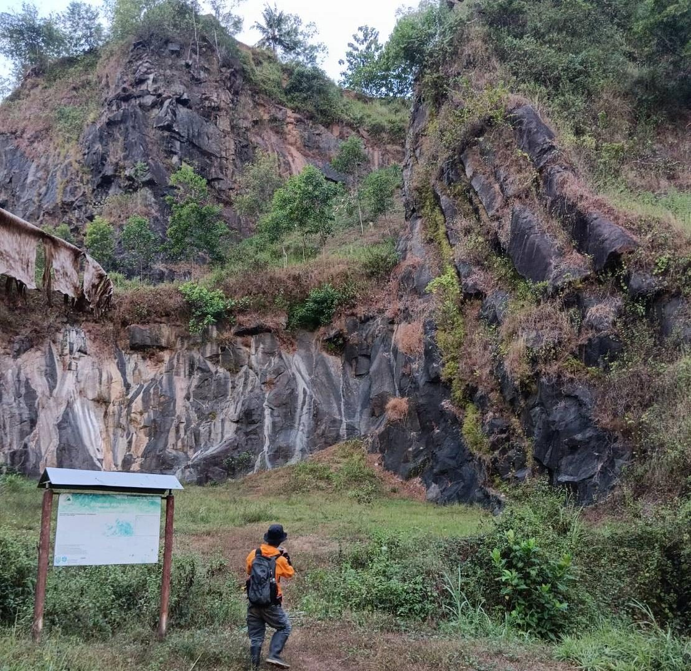
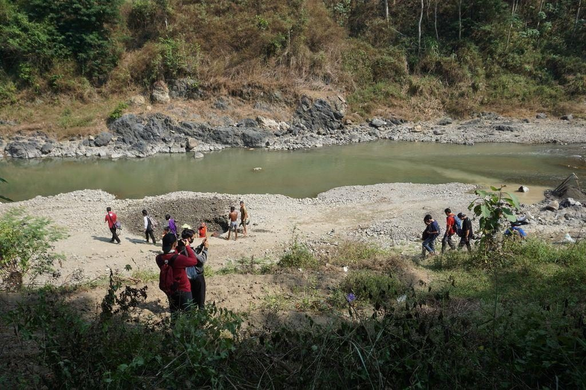

Chapter III
Stratigraphy — Oldest to Youngest
Six rock units, each validated through direct outcrop description, HCl reaction tests, and fossil
identification.
Sedimentary limestone & chert + metamorphic schist / phyllite
Formed by the subduction of low-density oceanic crust beneath higher-density continental
crust. Rocks generated inside the subduction zone became chaotically mixed with sediments
from outside it — white, fine-grained, HCl-reactive limestone bearing Nummulites
fossils (deposited above the CCD), and hard, red, non-reactive chert (deposited below the
CCD) — together with foliated (schist, phyllite) and non-foliated metamorphic rocks showing
nematoblastic and granoblastic textures.

Claystone, siltstone, with limestone & conglomerate interbeds — Kali
Pelikon
Deposited in a calm-water setting such as an open marine environment. Grey, loose
claystone and black, loose siltstone interfinger, with occasional medium-grained,
Nummulites-bearing limestone and conglomerate emplaced by gravity mass flow
within the marine basin.

Fluvial breccia with sandstone interbeds — Kali Peniron
Formed in a river environment. Poorly-sorted, boulder-to-pebble breccia (grey, sand-to-clay
matrix, sedimentary and igneous clasts) carries sandstone interbeds produced when turbulent,
irregular river flow interrupted the heavier bedload deposition.

Interbedded turbidite sandstone & claystone — Kali Peniron
Fluctuating water energy produced alternating sandstone (medium-to-fine grain, light grey,
parallel lamination and convolute bedding, moderate-to-good sorting) and dark-grey, loose
claystone. The presence of a Bouma sequence points to deposition by turbidity currents.

Aphanitic igneous rock & diorite intrusion — Gunung Parang
A younger intrusion cutting through the claystone–siltstone unit, evidenced by sheet and
columnar joints exposed at Gunung Parang. Black, fresh aphanitic rock sits alongside
holocrystalline, phaneritic diorite bearing plagioclase, hornblende, quartz, and biotite.

Unconsolidated fluvial deposits — Sungai Luk Ulo & Sungai Kedungbener
Deposited unconformably along the riverbanks from erosion and transport of every older
unit — boulder-to-pebble fragments of igneous rock, sandstone, limestone, conglomerate,
chert, green schist, phyllite, blue schist, marble, claystone, and siltstone, all lying
flat and undeformed.
